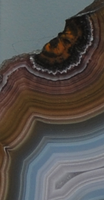
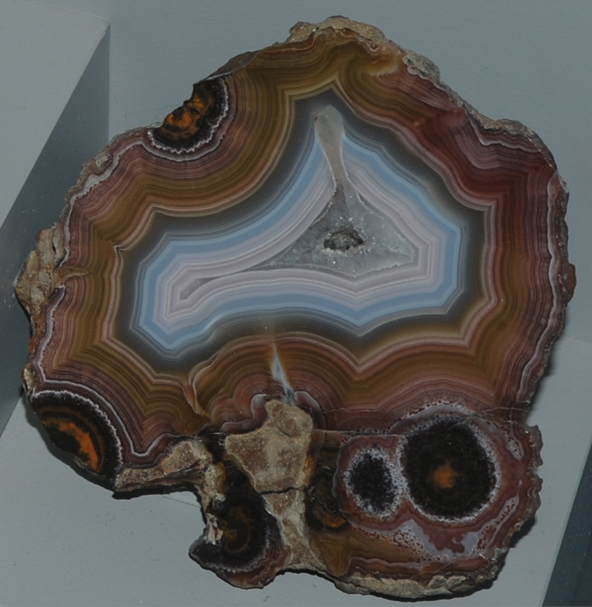
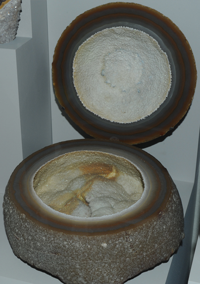
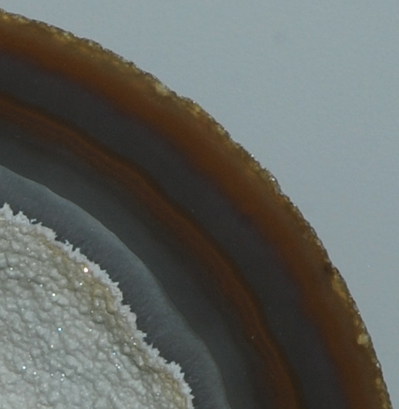
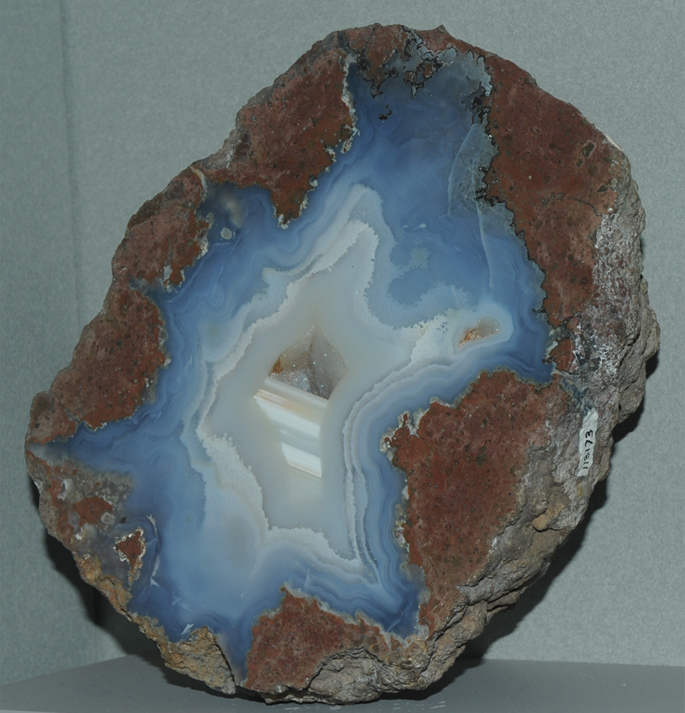
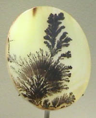
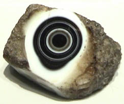
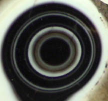
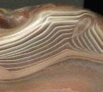

Quartz is silicon dioxide, SiO2. Agate is a variety of quartz showing dramatic crystal growth patterns. The sample at right is about 20x20 cm and is from Laguna Ranch, Chihuahua, Mexico.




This specimen of agate is about 20x18 cm and is from Brazil.

This specimen of agate is about 30x23 cm and is from Oregon.
This specimen of agate with manganese oxide is about 4x5 cm and is from India.



This specimen of agate is about 8x8 cm and is from Brazil.

This specimen of agate is about 16x14 cm and is from Pequot Lakes, Crow Wing County, Minnesota.